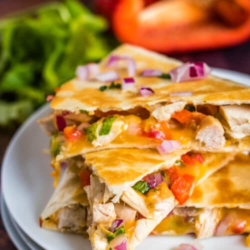

Chicken Quesadillas

Quesadillas can be both a snack or dinner. A fast and easy
meal for many, this will be accompanied by a delicious sauce
made from the flour and stock!
Ingredients:
- 1 tablespoon plus 1 teaspoon olive oil, separated
- 4 tablespoon all-purpose flour
- 2 teaspoon chili powder
- 1/2 cup chicken stock
- 1/2 red bell pepper, chopped
- 4 ounces sliced mushrooms
- 6 ounces shredded cooked chicken breast
- 6 ounces shredded sharp cheddar cheese
- 4 large flour tortillas
- Salsa, sour cream, fresh cilantro, lime wedges and sliced
avocado for garnish
Directions:
- Heat 1 tablespoon oil in a saucepan over medium heat. Add flour and
chili powder. Cook for 1 to 2 minutes stirring occasionally. Then add the
stock, bell pepper, mushrooms and chicken. Stir occasionally until vegetables
are tender, approximately 6 to 8 minutes. Remove from heat and stir in cheese.
- Heat 1/2 teaspoon oil in a skillet over medium heat. Spread half of the
vegetable mixture on a tortilla, leaving 1 inch borders all around. Then top with
a second tortilla. Cook until golden brown on both sides, approximately 2 to 3 minutes
per side. Repeat for the remaining tortillas.
- Slice the quesadillas into wedges and serve topped with the garnish.
Return to recipes